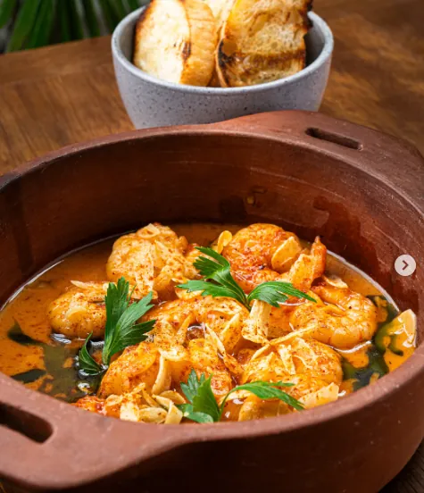
Langostinos al ajillo
Vino blanco, crema de ajíes, ajo crocante, mantequilla
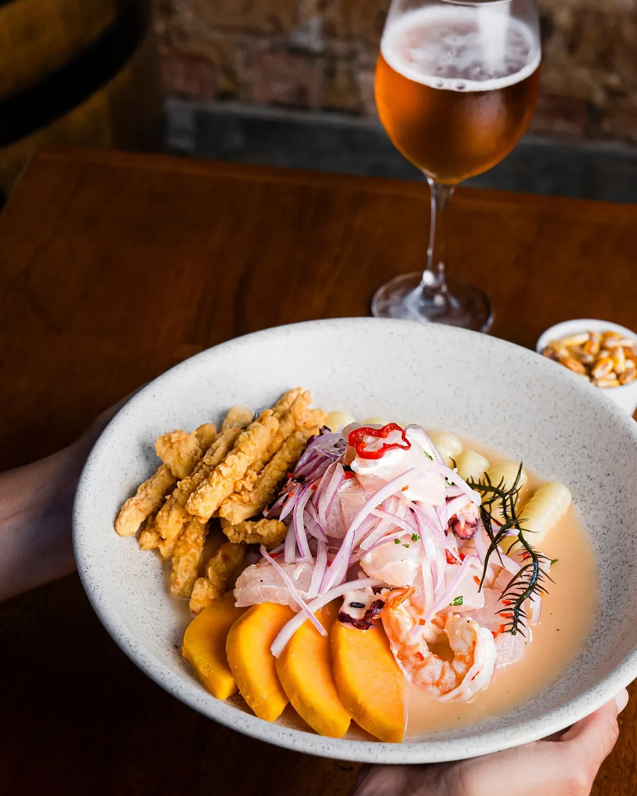
Picantería de mar · Calle Punta Sal, Punta Hermosa
Adentro: ceviches de bonito y charela, pulpo a la parrilla y una coctelería que no se guarda el pisco.
La casa
M Taberna nace en Punta Hermosa, con una idea simple: cocinar el pescado del día como se merece — crudo cuando pide crudo, a la parrilla cuando pide fuego.
La carta cruza el ceviche de bonito con el spaghetti alle vongole y no se disculpa por eso. Bajo el logo de cobre — la M golpeada a mano — hay una cocina que prefiere el ajonjolí tostado y el ají amarillo a cualquier salsa embotellada, y una barra que sirve el Pisco Punch de la casa sin medias tintas.
La carta

Vino blanco, crema de ajíes, ajo crocante, mantequilla
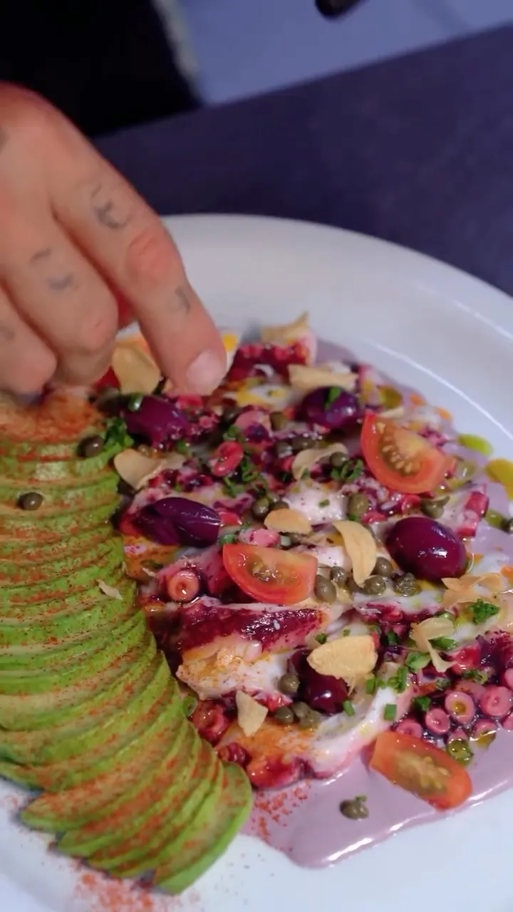
Palta, alcaparras, cherry, aceitunas, pimentón ahumado
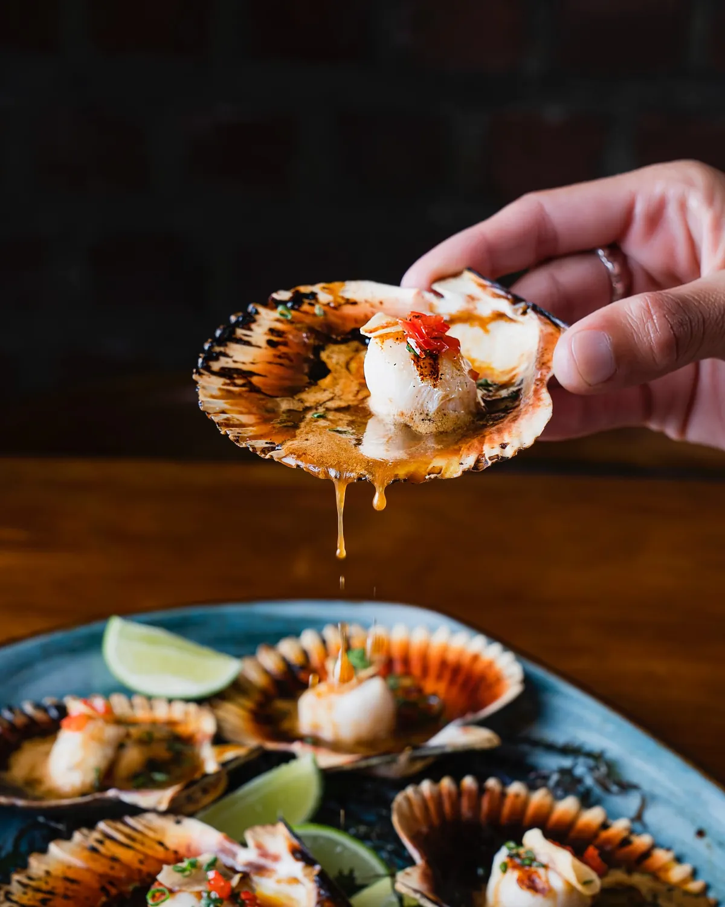
Mantequilla de algarrobina, chancaca y limón
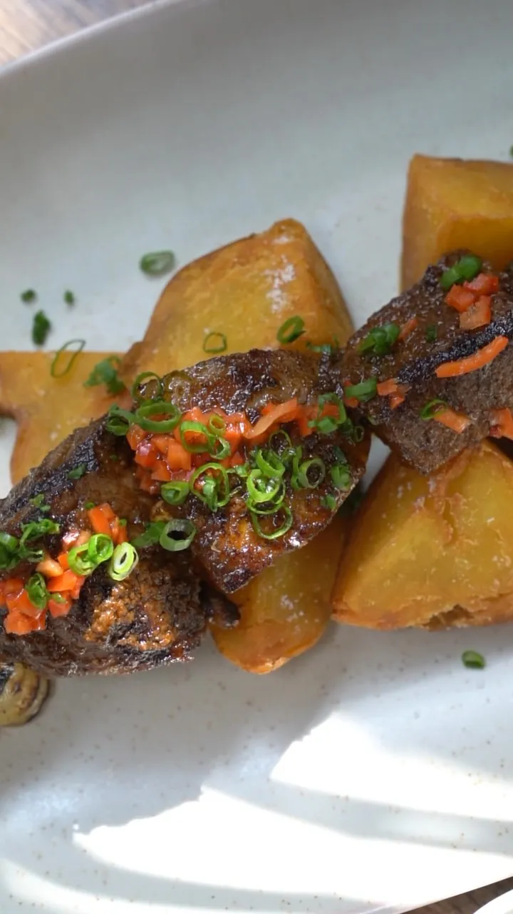
A la parrilla, al estilo de la casa
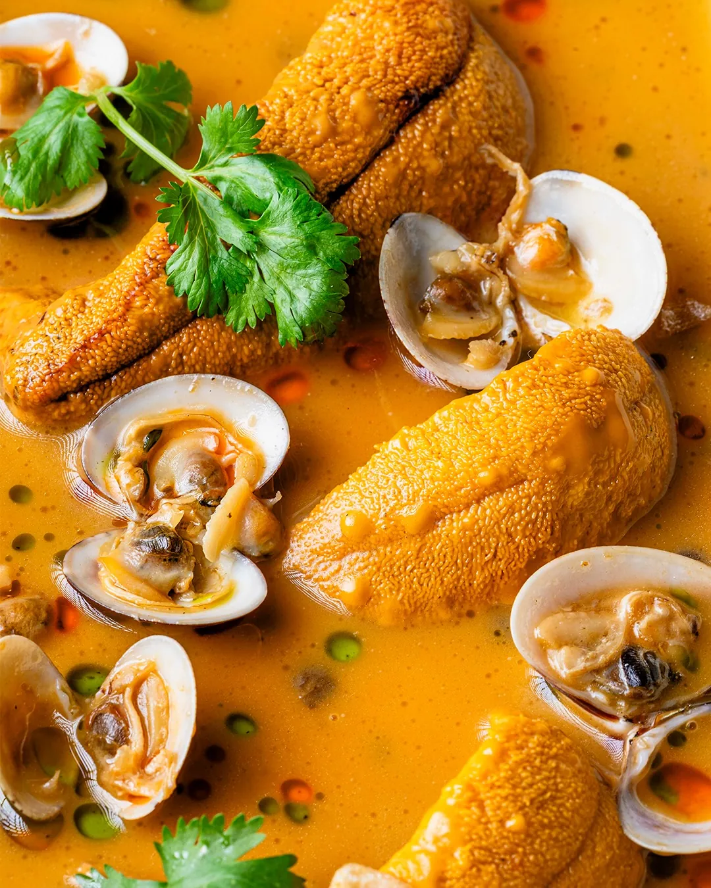
En su mantequilla, con vino blanco
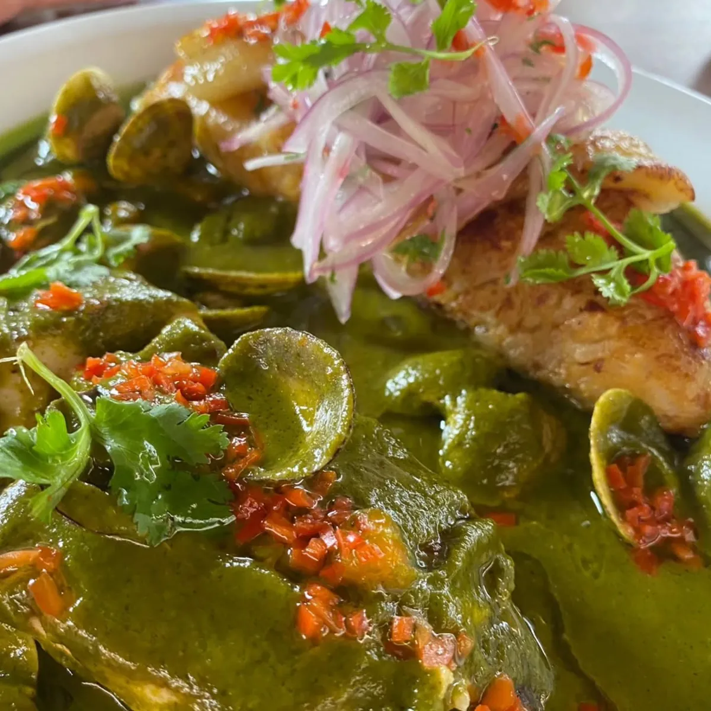
Tacu tacu, plátano frito, criolla
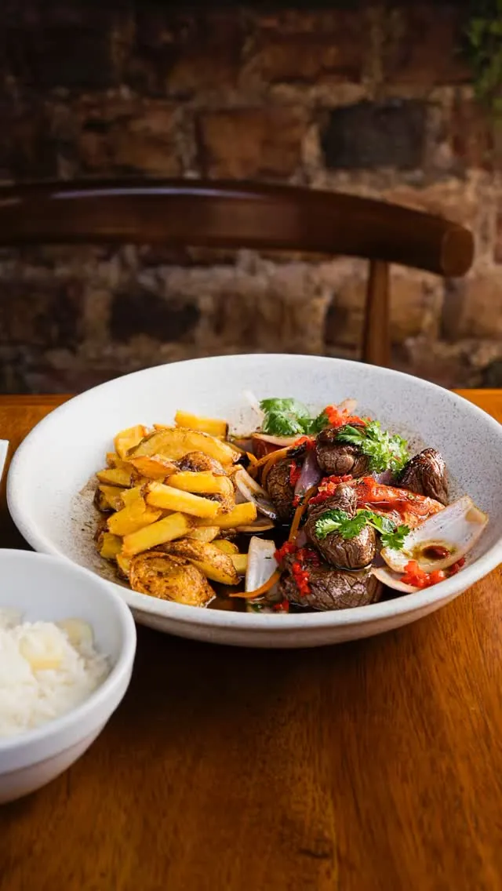
Papas fritas, arroz blanco
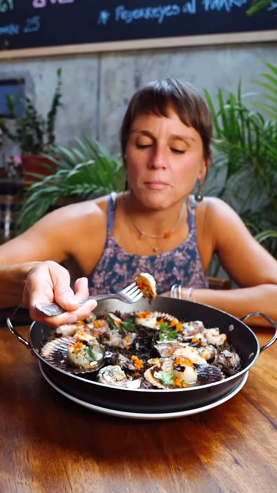
Fideos finos dorados, mariscos del día
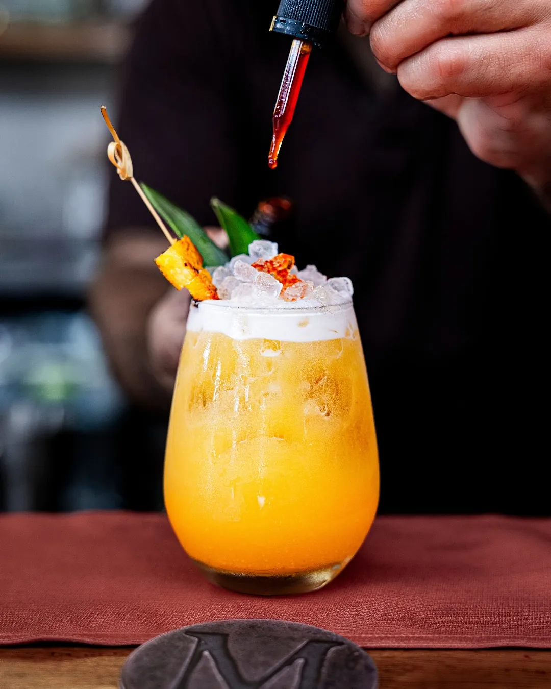
El infaltable de la barra
Papas fritas · Camote · Palta · Arroz con choclo · Arroz frito · Ensalada mixta · Vegetales al wok · Choclo · Tostadas · Grana padano · Galletas de soda
La carta cambia con lo que trae el mar cada semana — precios y disponibilidad, directo por WhatsApp.
Consultar precios y disponibilidadGalería
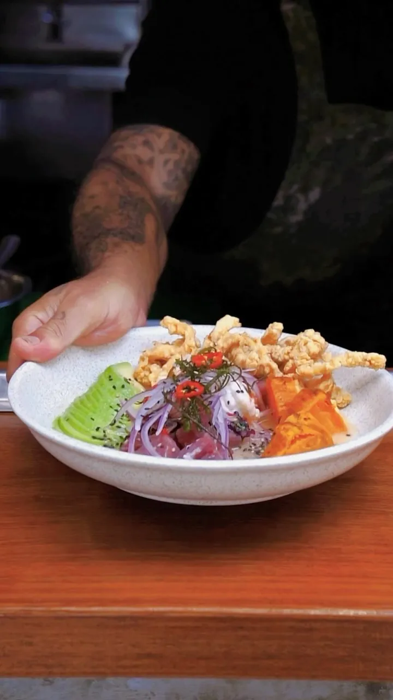
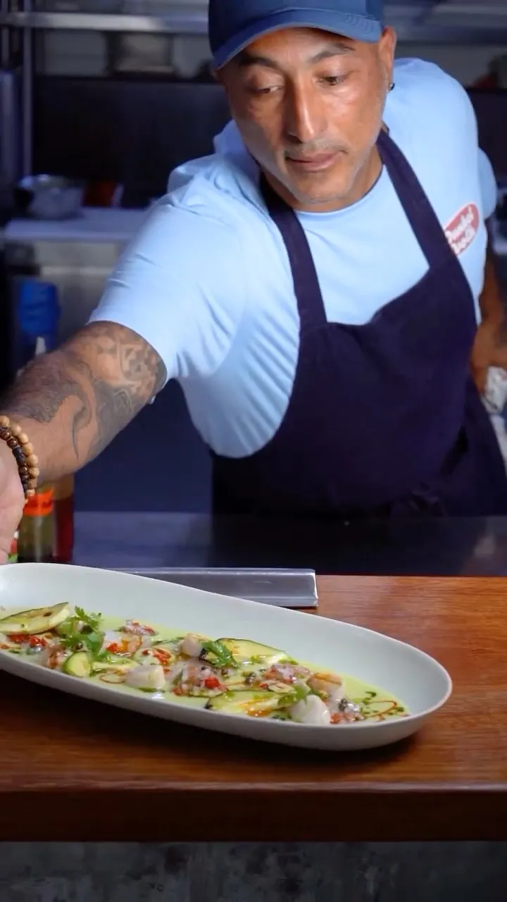
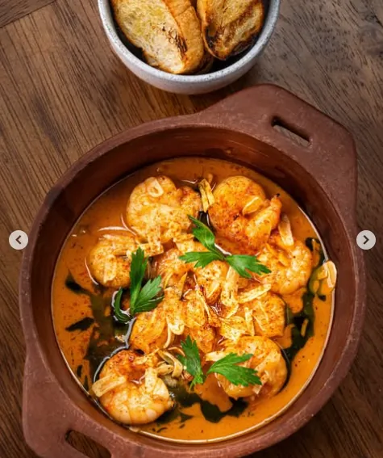
Encuéntranos
| Martes, miércoles, jueves y domingo | 12:00 m. – 6:00 p.m. |
|---|---|
| Viernes y sábado | 12:00 m. – 10:30 p.m. |
| Lunes | Cerrado |